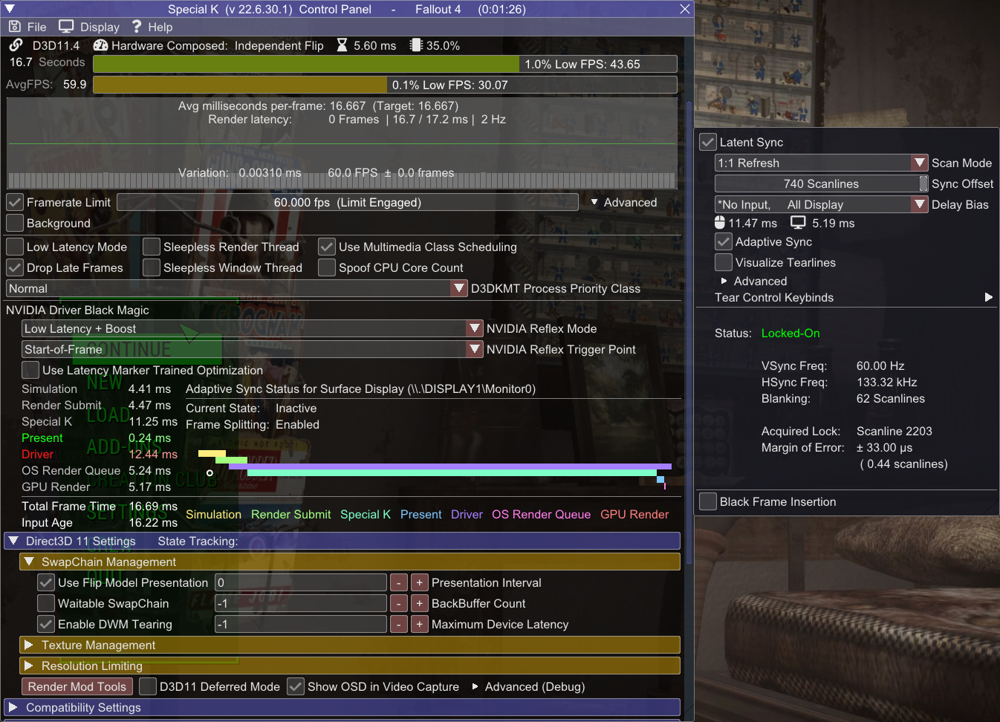

Introduction
Welcome!
This is a little spin-off for Fallout 4 made in collaboration with The Midnight Ride guide.If you want to see the full guide dedicated to Fallout New Vegas, go here.
Recommended framerate limiters and their configurations
(Not) Pushing the limits
Limiting framerate is very important for overall stability. A good limiter will most importantly improve framepacing, reducing microstutter. Other benefits could be reduced latency and power consumption.
Always limit your framerate to an amount you can actually achieve, otherwise you won't get any benefits!
Letting your GPU overwork itself has a big latency impact, so try to cap your framerate at such value, where your GPU doesn't sit at constant 100% usage
For proper G-Sync | Freesync usage...
- V-Sync must be enabled, in order to fully get rid of tearing
- Framerate must be capped below refresh rate, in order for VRR to not disengage and fallback to V-Sync - this causes very big increase in latency.
Enter your refresh rate here for automatic calculation of suggested FPS limits below. You can find your exact refresh rate here.
If you don't use, or have VRR, it's best to limit your framerate in full intervals. (30 at 60hz, 72 at 144hz, etc.)
Special K
Special K is a mod by Kaldaien focused mainly on fixing performance in games and implementing HDR. The overall list of features is too long to write here, but the most important ones used here is its best-in-class framerate limiter, alongside with Texture Cache, which provides better VRAM management, and faster loading.Warning!
- Special K works only on Windows 8 and higher
- Special K may conflict with Riva Tuner. If the game crashes or SK doesn't show up in game, make sure Riva Tuner is not running, or set Riva Runer's injection delay to 30000
- Special K is not compatible with ENB
I'm not providing calculated values here, because Special K already does that automatically, and with higher precision
Installation
- Download the SpecialK.7z from the Assets section, then extract SpecialK64.dll to your Fallout 4 root folder and rename it to dxgi.dll
- Launch Fallout 4 and press Ctrl + Shift + Backspace to enter Special K Control Panel
-
Enable the Framerate Limit by ticking the checkbox, then right click on the bar (not graph) next to it:
-
No V-Sync
In right click menu select your refresh rate
Optional - Disabled V-Sync with no tearing

-
V-Sync
In right click menu select your refresh rate, then Ctrl-Click on the Framerate Limit bar and subtract 1
In Direct3D 11 Settings, under SwapChain Management:
- Enable Waitable SwapChain
- Set BackBuffer Count to 3
- Set Maximum Device Latency to 4
-
VRR + V-Sync
In right click menu select VRR Bias and select the highest value.
- The bias option is not needed for lower values.
In Direct3D 11 Settings, under SwapChain Management:
- Set BackBuffer Count to 3
- Set Maximum Device Latency to 4
If you want to enter a custom value, Ctrl-Click on the bar. You can also drag your mouse on it.
Nvidia GPUs Exclusive - in Advanced options of Framerate Limiter you can toggle Nvidia Reflex for latency reductions.
This setting is not the same as the Low Latency Mode in Nvidia Control Panel or Special K's!- Nothing But Boost - Forces the GPU to run at highest clocks to reduce microstutter and latency caused by downlocking - recommended setting
- Low Latency - Enables Nvidia's Low Latency Reflex mode - can introduce stuttering when using G-Sync
- Low Latency + Boost - Enables both settings
-
No V-Sync
Your configuration should look similar to this

RivaTuner Statistics Server
Riva Tuner Statistic Server by Unwinder is probably the most famous FPS Limiter and OSD software, thanks to its compatibility, reliability and ease of use.Installation
- Install and open RTSS, press green Add button and select Fallout4.exe
- Set Application Detection Level to Low
-
Set Framerate Limit to:
-
No V-Sync
(RefreshRate)
-
V-Sync
(RefreshRate - 1)
-
VRR + V-Sync
(RefreshRate - (RefreshRate * 0.068))
-
No V-Sync
-
Enter settings using Setup button and:
- Enable Passive Waiting
- Set framerate limiter to Front Edge Sync
- Enable Start with Windows or launch RTSS everytime before you play
Your configuration should look similar to this

NVIDIA | AMD driver
The most basic limiters from this list, but definitely the easiest and fastest to set up!
NVIDIA
AMD
Finish
Finish Line
Congratulations! You've made it through! I hope this guide helped you making Fallout 4 a smoother experience.If you have any issues, questions, critiques or recommendations hit me up on Discord - Wall_SoGB#2421.
You can also find me on Viva New Vegas, xNVSE, Tale of Two Wastelands servers.